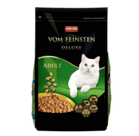

Le site du chat
Nos croquettes
| Chaton |
Ces croquettes pour chats de luxe sont le summum de la perfection gastronomique féline. Chaque bouchée est un tourbillon de saveurs raffinées, savamment concoctées pour satisfaire même les papilles les plus exigeantes. Elles sont élaborées à partir des ingrédients les plus nobles et les plus frais, sélectionnés avec soin pour offrir une alimentation digne des félins les plus distingués. Les croquettes sont préparées avec un souci du détail sans faille, alliant une texture croustillante à une finesse sans pareille. L'ensemble de ces caractéristiques offre une expérience culinaire inégalée pour votre compagnon à quatre pattes. Offrez-lui donc ces croquettes d'exception pour un moment de dégustation incomparable et une santé au poil ! |
49€/kilo | |
| Ado | 49€/kilo | ||
|  | Adulte | 49€/kilo |